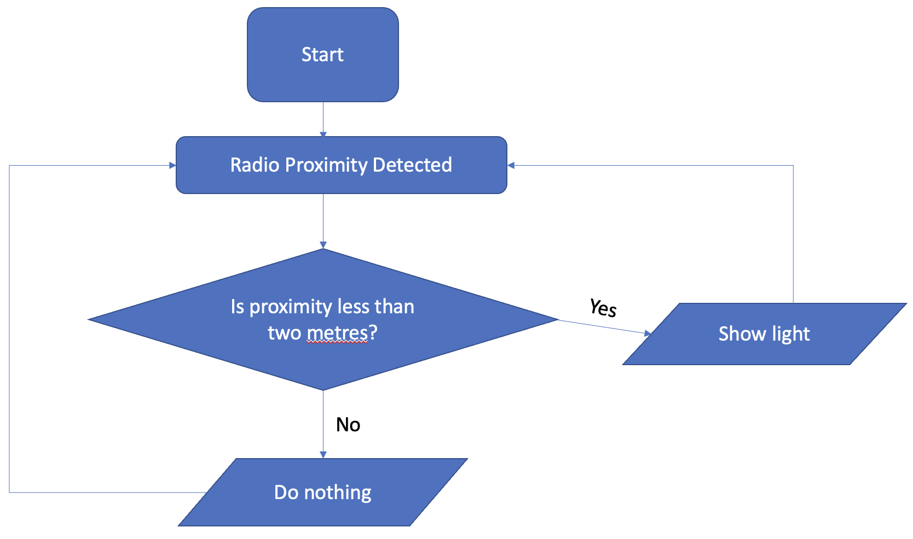
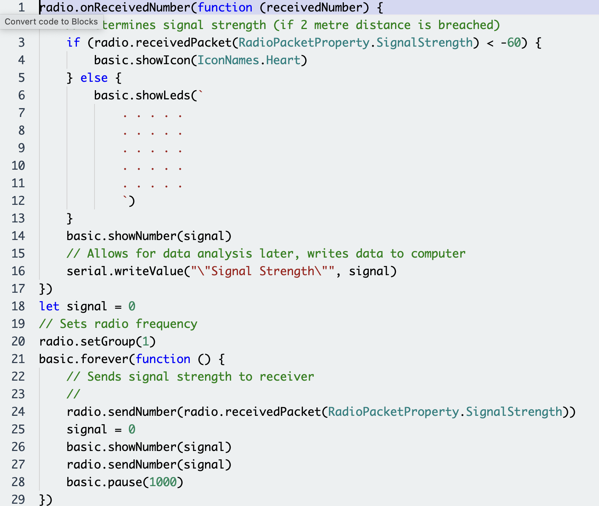
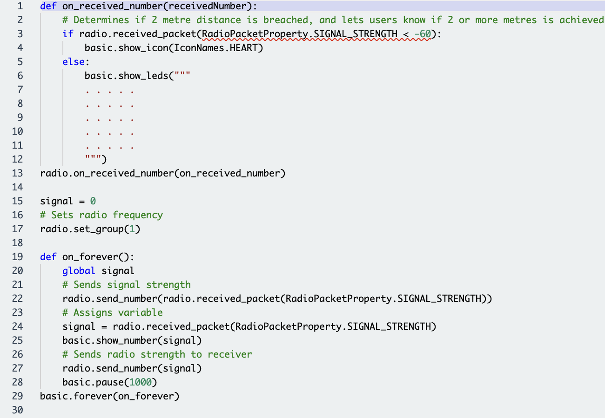

For my project, I decided to use the iterative design process. I used this process because it is a standard industry process, quick, efficient and logical. It is also easy to follow because it goes step by step through the system. It also ensures less mistakes, as each section must be done correctly before moving onto the others, which keeps the solution intact.
For the investigate process, I looked at social problems related to covid-19. Of course, it is very difficult to pinpoint just one problem, so I used abstraction to find what could be a leading factor for cases, and saw that people found it difficult to maintain social distancing in buildings or elsewhere given it is difficult to estimate two metres from people. I decided to work on a device that uses radio signals to communicate with other devices to estimate the proximity between two devices as this would help drive down the case numbers if implemented nationally. It could also be used to see how often people keep a safe distance from each other, which could help research into where cases are most likely to flare up, more likely in cities and crowded conditions such as apartment complexes.
As for planning, I took time to understand the problem in hand, and how I could implement a solution to this issue to drive down cases in Ireland. I looked at a device called a Microbit, a device that has many features, including a radio signal which would prove useful for my project as my project would need a radio signal and a light to alert users when the two metre distance has been breached. There is a direct correlation between radio signal strength and distance between two radios. If I was able to conduct an experiment to estimate the strength of the signal when two devices are at two metres distance between themselves, I could create a program that could detect this and indicate such to the end user in order to fulfill the requirements of this project to be used in Ireland. I created a simple flowchart to follow as I designed the program, which would help me to clearly see where the program could do with some adjustments. As mentioned previously, an analysis could be conducted in order to find out if people are keeping their distance from others.
As for designing the project, it wasn't too difficult because I was able to use a Microbit, which had everything needed for the project, such as lights and radio. It has its own site, MakeCode, where you can see other creations in order to gain perspective on how you could implement your own idea. There were some sample projects that I took inspiration from, which included radio signals and an LED light. It also had really useful tools for generating data such as radio signal strength, which could be used to analyse data on distance, such as when people kept distance, and when people didn't. Using this new knowledge, I was able to move onto the next stage of the iterative design process, Create.

Moving onto Create wasn't too difficult, as I had already decided on what tools I needed, such as the Microbit and the MakeCode site, and how I was going to implement the solution to the social distancing issue we have in Ireland, and to analyse social behavior in terms of covid 19 spreading. I conducted my experiment, finding out the exact radio signal strength at two metres proximity betweeen two Microbits, which was -60. After finding this out, I took to MakeCode to create my program. There were, of course, some issues invloved in creating the code, like getting the proximity strength correct in the code. However, I found a YouTube video in which someone found the signal strength needed for 2 metres (roughly -60), and after a few attempts of creating the program, the project was ready.


After creating the program, I set out to test out the device to make sure that it would work in practice, which would be known as beta testing in industry. I placed both radios at 2 metres - no light was emitted. I brought them closer than two metres and the light came on. I also was able to use the tools in MakeCode to generate a csv file to analyse signal strength between devices in a given interval, and generate a pie chart to show when distance was kept, versus when it wasn't. Success! The project was complete, and was able to utilise this device with friends so that we could all keep socially distanced.
Summary:I investigated the problem of social distancing in Ireland and found it wasn't the best for crushing covid 19 cases. I also used computational thinking to find a solution and develop an algorithm. I then set to work on finding a device that would fit my needs for the project, which would be a radio and light sensor. I chose the Microbit to do this. I then conducted research to find out the radio signal strength of two metre distance between two devices. After that, I was able to design some code to use these sensors, and then analyse data from the microbits to form a result of the solution implemented.
Key Questions:
The Microbit is an embedded system with many features, such as radio connectivity, button inputs, LED lights and the ability to attach other components using pins. In my project, I used just the LED lights, radio connectivity, and the serial write ability of the Microbit to complete the task. My system accepts inputs in the form of radio signals and communicates this data, i.e. the signal strength, to other Microbits on the same radio frequency. The program is configurated through MakeCode, a site with a user interface used to create code for other Microbit systems. Once the code has been generated for the Microbit, it can be downloaded onto the Microbit itself and, upon receiving power, the program begins immediately. The program works by using if statements to analyse data (radio strength) to check if the user is 2 metres away from another Microbit, and if so, it shows the user a heart icon on the LED panel. If not, it shows nothing on the LED panel. The program also shows the user the signal strength, so they know exactly how far away, in terms of signal strength, they are from another Microbit.
The Microbit also has another functionality. It makes use of the 'serial write' function in order to send data from an unplugged Microbit, to one that is plugged into a computer. The Microbit uses Makecode to show how the variable 'signal' changes. The Makecode web page allows the user to take this data, and download it in the form of a csv file. This csv file is stored on the computer, and can be used in the data analysis program later on. If the user decides to analyse the data through a Python program, they can do so. The Python program allows the user to interact with it, the user can make choices on whether to continue or not, and make use of a simple GUI that allows them to choose which csv file to analyse. The program must use abstraction in order to remove unneccessary data, and organise this data into lists. It does this to separate what signal strength was greater than 2 metres, and which was not. It is then able to use simple math to find the percentage of each list in terms of the overall collection of signal strength. It can then show the user a pie chart, which clearly shows how much time they were socially distanced, and how much time they were not. This analysis allows the user to see how well they are following social distance guidelines, and can allow them to act more responsibly to prevent the spread of covid 19, or themselves from contracting it. Once the program closes, it shows the user a text based version of the analysis, along with letting them know that if they want to run another analysis, they must run the program again, and terminates.
In this system, I used pattern recognition to realise that both Microbits use very similar codes, so I created two copies of the program, and modified one so that it could write to serial the data required (signal strength). This allowed me to save time, while allowing me to troubleshoot modified code, because I knew the other code was untouched, which narrowed down what could have went wrong. In my microbit code, I only used variables to store data. However, in my Python analysis program, many data structures were used, in particular - variables and lists. The data types were changed periodically when needed, as data was needed to be removed; lists were converted to strings, then back to lists again. Many lists were used so as to separate data into their appropriate lists for mathematical equations. In the Python program, it worked with a csv file which also contained time intervals, which made their way into the original list 'rawData'. However, the csv file also contained the signal strength numbers. As the data analysis was only concerned about the signal strength, and that the Microbit sent data in regular 1 second intervals, the time interval wasn't needed and wasn't put into any other list besides the first list 'rawData'. There were two lists that program was mainly concerned with - 'lessThanTwoMetres' and 'moreThanTwoMetres'. The program therefore used abstraction to remove data that wasn't needed, such as the time interval, but also unwanted symbols that would have caused the program issues down the line. The abstraction ensured that the data used was in the purest form, which ensured no errors in the running of the program, and makes it easier for the user as they don't have to manually edit the csv file - the program does that itself. It also used decomposition priniciples in this way, as it takes data, and breaks it down into more manageable data sets for the program to use, removing the likelihood of errors.
Obviously, this program didn't run perfectly straight away - I had to take a step back and understand major issues that I had when testing. For testing, I ran the program, as if the user was doing it themselves, and stepped through the code to find the issue. For example, the csv file that was made by the Microbit site, wasn't originally able to be used to generate a pie chart. I looked into many ways of finding methods of removing characters so that the if statements and for statements used for the rest of the code worked. I found that by converting the list to a string, I could use the remove function to remove characters that were not allowing my program to work because the math involved would only allow numbers, no commas, nothing. Another issue that I came upon while testing was that I couldn't separate the string back into a list. After looking at the issue more, I tried using the separate function, using the commas left in intentionally on the string, and it worked. This allowed me to store actual numbers into the lists for use with the pie chart. The pie chart also gave me issues because I didn't understand how to highlight the critical data with 'explode'. After using StackOverflow, I found out that the numbers I was using were making the pie chart very spaced out, as in the two parts of the chart had a very big spacing between them. I then used a smaller number and tested the program again, and then it worked. This system as a whole allows users to understand their own behaviours in relation to social distancing, and allows them to make changes so as they can keep themselves safe and prevent the spread of covid 19.
Summary:The System consists of two microbits, and a python program. The microbits communicate data to each other and the computer stores this data for further analysis. A program helps to analyse the data, giving the user a clear representation of the data. Problems did occur, but were overcome, and computational thinking ideology was a centrepoint throughout the system.
Key Questions: